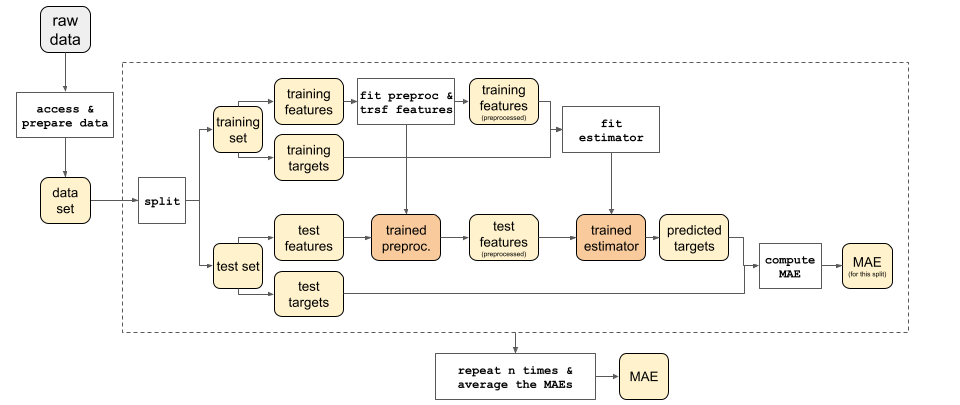

Architecture
In this mini-project, we will build an extensible and fully reproducible system to analyze multiple datasets, with various Machine Learning techniques.
Functional Overview
The system is a straightforward machine learning pipeline: it takes a dataset, trains a model and evaluates its Mean Absolute Error (MAE).
Evaluator
The Evaluator is an orchestrator that takes a Preparator, a Preprocessor and an Estimator and returns their MAE.

It has the advantage of being easily customizable, as the injected dependencies (aka the “blue blocks”) can be easily swapped. However, it can be somewhat complex to initialize.
Service
To help with the initialization of the Evaluator, we provide a Service, that is
extremely easy to use (Service().run()) and can be used as an entry point.
Behind the scenes, Service ensures the initialization of an Evaluator, via factories

NB: the above diagram shows the interactions of the following classes: